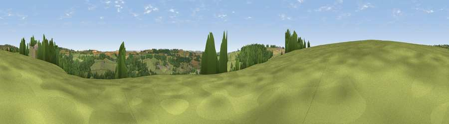

Viewpoint near Yarcombe
#26962 in England · top 65% of its area beats it · near YarcombeWhere it is
The exact computed spot (ST 24875 10975). Click the marker for map links.
The view, rendered

A 360° render of this exact spot computed from the terrain model, tree cover and land cover — summer colours, afternoon light, calibrated against photographs of famous viewpoints. Real trees, hedges and buildings will differ in detail.
The panorama
Grey silhouette: terrain skyline in each direction (720 bearings, Earth curvature and refraction included). Dashed green: skyline with trees (+15 m) and buildings (+8 m) as obstacles. Blue strip: how far the ground is visible on each bearing.
Where the view opens
Wedge length = distance to the farthest visible ground on that bearing (vegetation-aware). Rings at 10, 25 and 50 km.
What fills the view
71% grassland · 24% woodland · 3% cropland · 2% built-up
Angular shares of the visible panorama (visual magnitude), not map area. Landscape diversity 0.34 (0–1 Shannon).
Key numbers
More beautiful places nearby
The staircase of upgrades: each row has a higher view potential than everything closer. Driving times are estimates from straight-line distance, calibrated against real road routing — check an actual route before setting out.
| Place | Direction | Drive | Score |
|---|---|---|---|
| Viewpoint near Yarcombe | NW · 0 km | ~1 min | 49.1 |
| Viewpoint near Yarcombe | SSW · 2 km | ~6 min | 57.7 |
| Viewpoint near Yarcombe | SSW · 4 km | ~10 min | 63.3 |
| Viewpoint near Buckland St. Mary | ENE · 5 km | ~10 min | 65.8 |
| Viewpoint near Combe St Nicholas | ENE · 5 km | ~11 min | 67.9 |
| Viewpoint near Buckland St. Mary | NNE · 5 km | ~12 min | 73.0 |
| Viewpoint near Buckland St. Mary | NNE · 5 km | ~12 min | 77.3 |
| Viewpoint near Hewish | E · 16 km | ~28 min | 78.5 |
50.89335, -3.06953 · source: screening · position refined by local search. Computed location — check access rights before visiting.